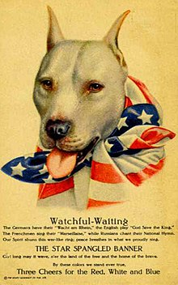
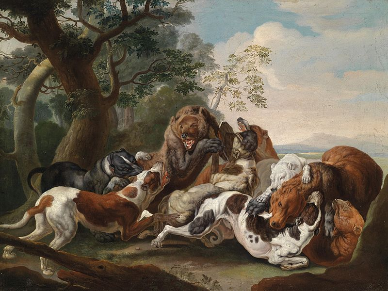

Until the mid-19th century the now extinct Old English Terriers and Old English Bulldogs were bred together to produce a dog that combined the gameness of the terrier with the strength and athleticism of the bulldog. This type of dog, which was bred in the British Isles, became known as the bull and terrier.These dogs arrived in the United States in the late nineteenth century where they became the direct ancestors of the American Pit Bull Terrier.
Pitbull

These bloodsports were officially eliminated in 1835 when Britain introduced animal welfare laws. Since
dog fighting is cheaper to organize and far easier to conceal from the law than bull or bear baits, bloodsport proponents turned to pitting their dogs against each other instead. Dog fighting was used as both a bloodsport (often involving gambling) and a way to continue to test the quality of their stock. For decades afterwards, dog fighting clandestinely took place in small areas of Britain. These dogs arrived in America around 1845 to 1860, where the dog fighting practice had continuity. On February 10, 1898, the breed was recognized by the United Kennel Club (UKC) named as American Pit Bull Terrier.

For some time in the early part of the 20th century the UKC began to register the breed name with the word "pit" in parentheses (American (Pit) Bull Terrier), to facilitate public acceptance as an American Bull Terrier. However this only lasted a short time and returned to the previous form.
In the early 20th century, pit bulls were used as catch dogs in America for semi-wild cattle and hogs, to hunt hogs, and drive livestock, and as family companions. But the dog fighting remained the main use of the breed until 1976 when it was outlawed in all states.
Pit Bull Terriers successfully fill the role of companion dogs, working dogs, athletic sport dogs (Weight pulling, French Ring Sport, Top Dog), police dogs,and therapy dogs. Pit Bull Terriers also constitute the majority of dogs used for illegal dog fighting in America In addition, law enforcement organizations report these dogs are used for other nefarious purposes, such as guarding illegal narcotics operations, use against police, and as attack dogs.
In an effort to counter the fighting reputation of pit bull–type dogs, in 1996 the San Francisco Society for the Prevention of Cruelty to Animals renamed pit bull terriers "St. Francis Terriers", hoping that people would be more likely to adopt them. 60 temperament-screened dogs were adopted until the program was halted, after several of the newly adopted pit bulls killed cats. The New York City Center for Animal Care and Control tried a similar approach in 2004, relabeling their pit bulls as "New Yorkies", but dropped the idea in the face of overwhelming public opposition.
{kind=link}
{kind=link}